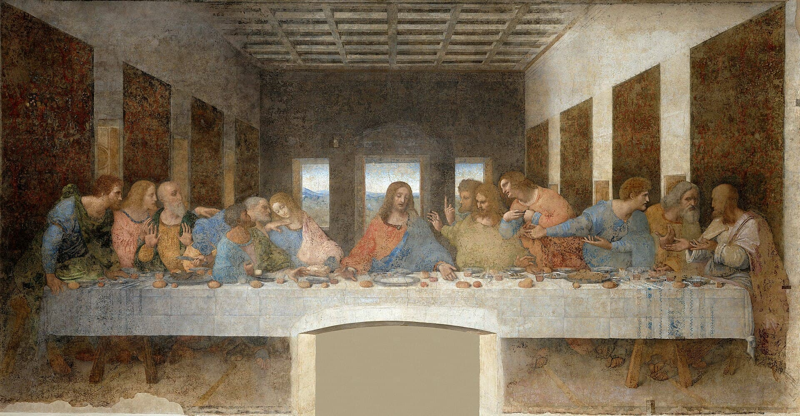
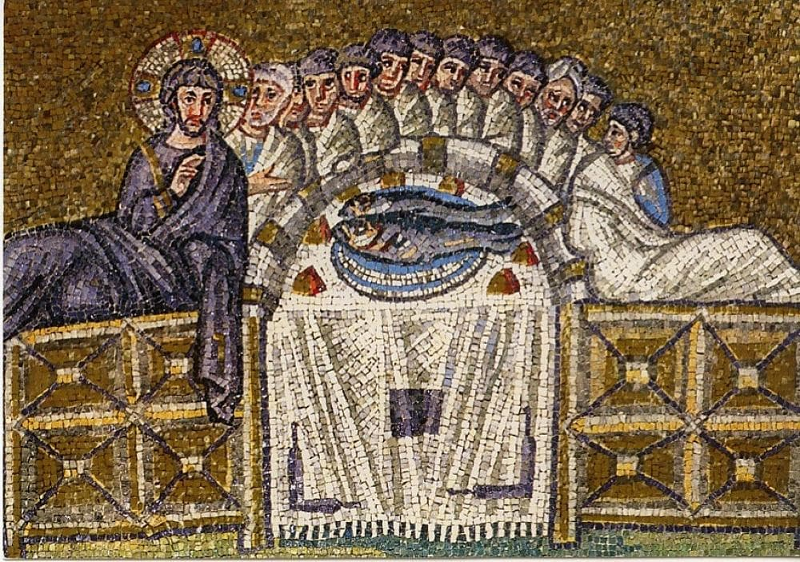
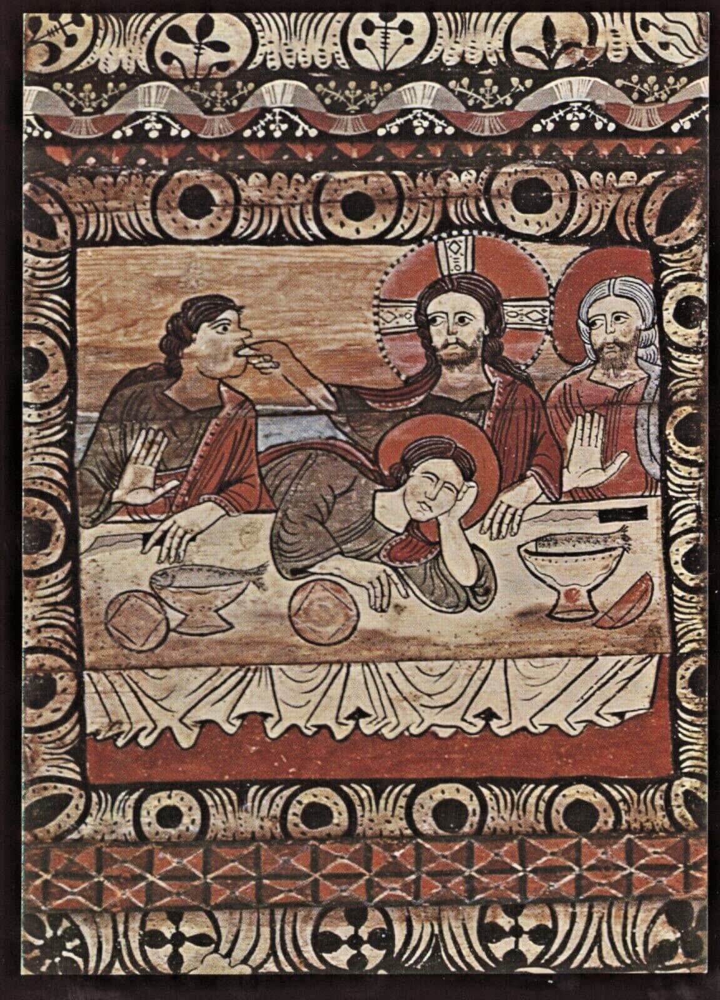
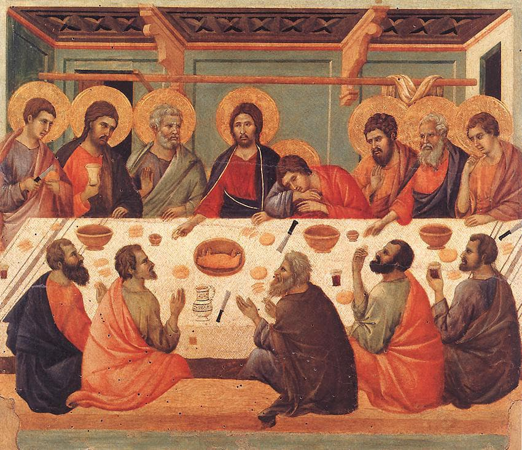
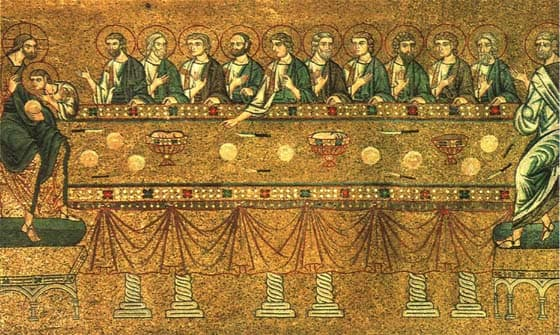
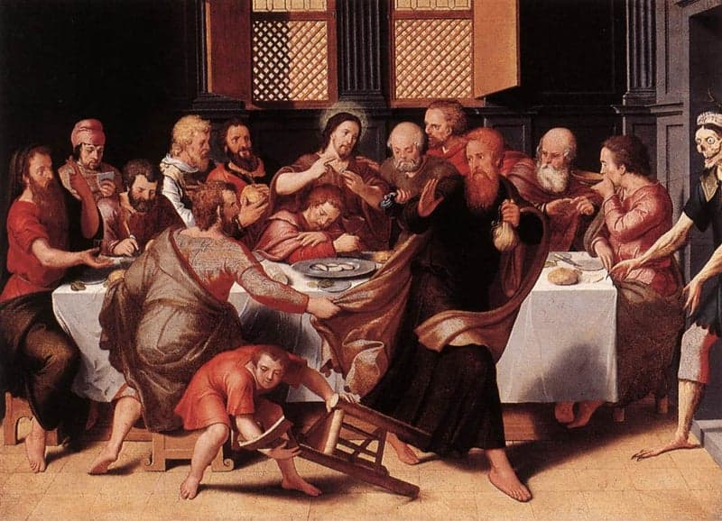
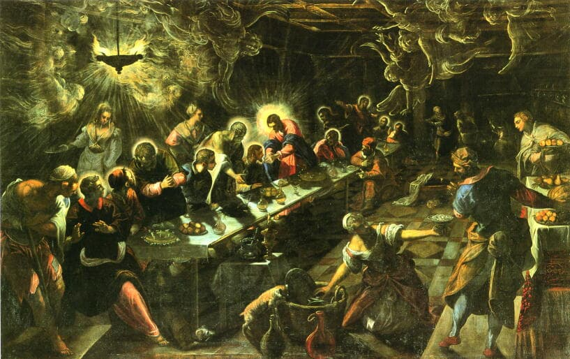
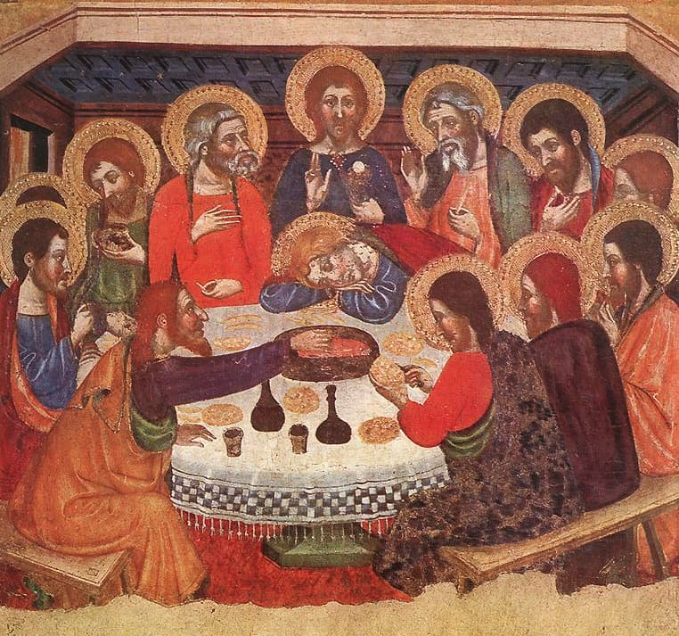
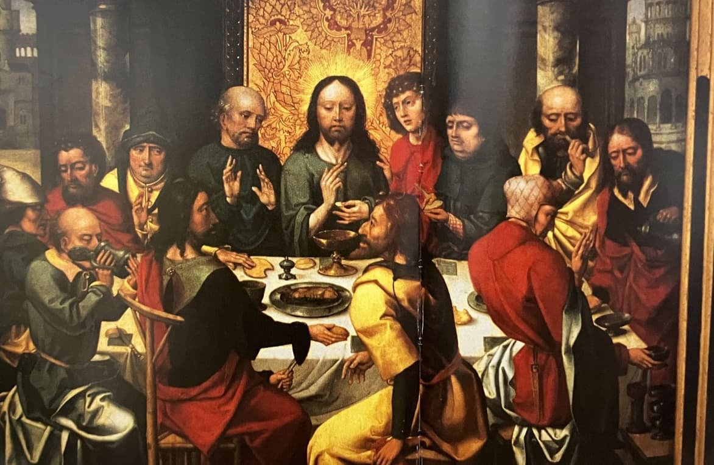

これを読んでいる方へ
ゴルゴダの丘。
この言葉なら犯人にバレずに同志の方とコンタクトが取れるのではないかと思いました。
狭間書房の方でしょうか、それとも父が編集した本の読者の方でしょうか。
初めまして。桐須瑛人の娘の沙良と申します。
ある日突然父から「連絡が取れなくなったらこれを見てくれ」とPDFファイルが送られてきました。
そう、湯田の計画書です。衝撃的な内容でしたが、私ももう社会人なので冷静に読み進めました。
フィクションにもほどがある、と思いましたが父と連絡が取れなくなっているのは事実です。
私は父を助けるために、ドアを送信するための「専用のフォーム」を探すことにしました。
調査を続ける中で、ある情報を入手しました。
「晩餐の中、神の子に見られる共通点を探せ」
私は湯田の計画書にも添付されていた『最後の晩餐』についても調べることにしました。
すると、『最後の晩餐』はあの1枚だけではなく複数の作品があることがわかりました。
ここに見つけたものを添付します。











あいにく私は父と違ってアートに疎く、共通点が何かわかりかねています。
そして、「共通点を表す言葉」を5回押すと「専門のフォーム」が現れるそうです。
もしも専門のフォームを見つけたら、迷わずに父を救ってくれませんか？
どうか、どうかよろしくお願いいたします。
桐須紗良